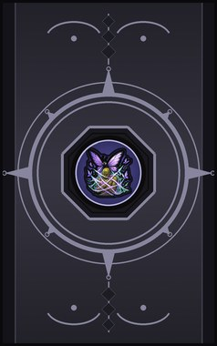
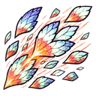
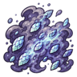
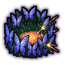

Technique trees › Clans and bloodlines
Kitateha clan
10 techniques in the Clan tab.
Needs the Kitateha gene.

Scale Shot C
Chakra 14. Fire butterfly scales like shrapnel.
Scale Shot C
Chakra 14. Fire butterfly scales like shrapnel.
Fire butterfly scales like shrapnel.
| Rank | Chakra | Cooldown | Class level |
|---|---|---|---|
| C | 14 | 7.5 s | 4 |
Butterfly Bind CB
Chakra 15 to 30. Butterflies spit silk to hold an enemy. The cocoon wraps them completely.
Butterfly Bind CB
Chakra 15 to 30. Butterflies spit silk to hold an enemy. The cocoon wraps them completely.
Butterflies spit silk to hold an enemy. The cocoon wraps them completely.
| Rank | Chakra | Cooldown | Class level |
|---|---|---|---|
| C | 15 | 20 s | 5 |
| B | 30 | 33 s | 9 |

Paralyze Powder C
Chakra 25. A cloud of scales paralyses every enemy in a small area.
Paralyze Powder C
Chakra 25. A cloud of scales paralyses every enemy in a small area.
A cloud of scales paralyses every enemy in a small area.
| Rank | Chakra | Cooldown | Class level |
|---|---|---|---|
| C | 25 | 33 s | 6 |
Sleep Dust C
Chakra 25. Drowsy dust leaves every enemy in an area dulled and slow for a minute.
Sleep Dust C
Chakra 25. Drowsy dust leaves every enemy in an area dulled and slow for a minute.
Drowsy dust leaves every enemy in an area dulled and slow for a minute.
| Rank | Chakra | Cooldown | Class level |
|---|---|---|---|
| C | 25 | 33 s | 6 |
Butterfly Vortex DBA
Chakra 12 to 40. A vortex of butterflies hurls enemies away. Larger at each rank.
Butterfly Vortex DBA
Chakra 12 to 40. A vortex of butterflies hurls enemies away. Larger at each rank.
A vortex of butterflies hurls enemies away. Larger at each rank.
| Rank | Chakra | Cooldown | Class level |
|---|---|---|---|
| D | 12 | 15 s | 2 |
| B | 25 | 20 s | 9 |
| A | 40 | 25 s | 13 |
Butterfly Kisses C
Chakra 20. Butterflies bind an ally's wounds.
Butterfly Kisses C
Chakra 20. Butterflies bind an ally's wounds.
Butterflies bind an ally's wounds.
| Rank | Chakra | Cooldown | Class level |
|---|---|---|---|
| C | 20 | 33 s | 5 |
Dance of the Butterfly Darkness BA
Chakra 20 to 30. Move like a butterfly for half an hour: hard to hit and quick.
Dance of the Butterfly Darkness BA
Chakra 20 to 30. Move like a butterfly for half an hour: hard to hit and quick.
Move like a butterfly for half an hour: hard to hit and quick.
| Rank | Chakra | Cooldown | Class level |
|---|---|---|---|
| B | 20 | 1.2 hours | 9 |
| A | 30 | 1.2 hours | 13 |

Fluttering Wall B
Chakra 30. A wall of butterflies around a spot catches enemy shots for twenty seconds.
Fluttering Wall B
Chakra 30. A wall of butterflies around a spot catches enemy shots for twenty seconds.
A wall of butterflies around a spot catches enemy shots for twenty seconds.
| Rank | Chakra | Cooldown | Class level |
|---|---|---|---|
| B | 30 | 1.2 hours | 10 |
Feast of the Butterflies A
Chakra 45. Butterflies swarm one enemy and drink from them.
Feast of the Butterflies A
Chakra 45. Butterflies swarm one enemy and drink from them.
Butterflies swarm one enemy and drink from them.
| Rank | Chakra | Cooldown | Class level |
|---|---|---|---|
| A | 45 | 1.2 hours | 14 |
Butterfly Diffuse S
Chakra 90. S-rank illusion: every enemy in a wide area sees the world dissolve into butterflies and wanders off lost.
Butterfly Diffuse S
Chakra 90. S-rank illusion: every enemy in a wide area sees the world dissolve into butterflies and wanders off lost.
S-rank illusion: every enemy in a wide area sees the world dissolve into butterflies and wanders off lost.
| Rank | Chakra | Cooldown | Class level |
|---|---|---|---|
| S | 90 | 4.8 hours | 18 |
Chakra is the technique's base cost, the number in its def. In play it is multiplied by the pawn's chakra energy usage multiplier, which traits (chakra artificer 90%, volatile conduit 110%), World of Naruto genes and jutsu enhancements change, so the technique window can show a slightly different number for each ninja. Cooldowns are in-game time, as the technique window shows them, and the pawn's cooldown stat shortens or lengthens them. World of Naruto gives every ninja a base of 100 maximum chakra; genes and traits change it.